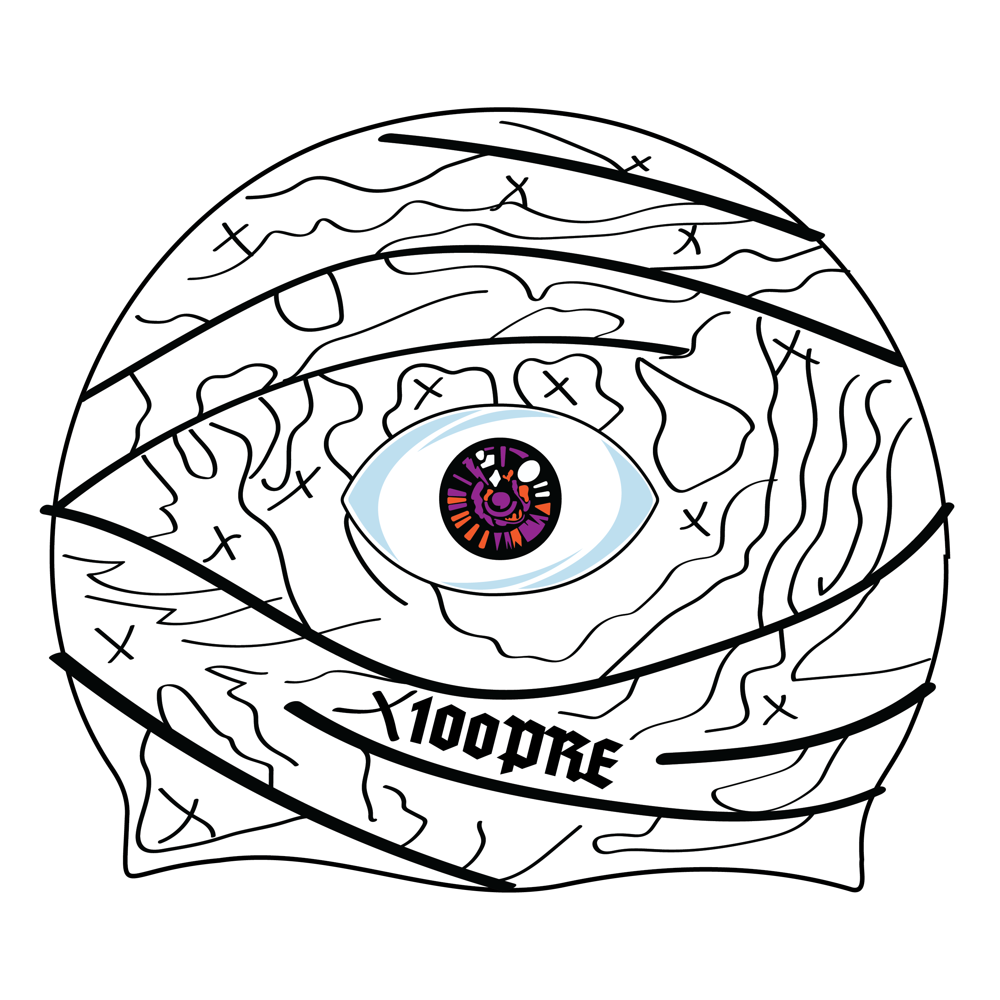
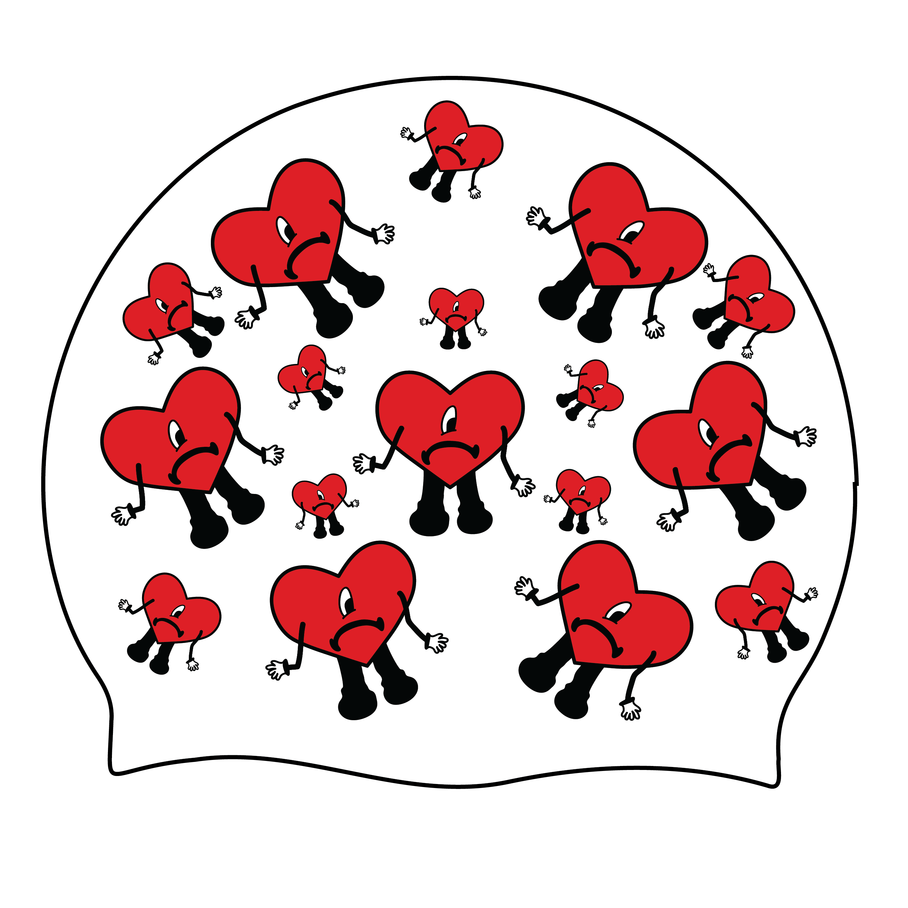
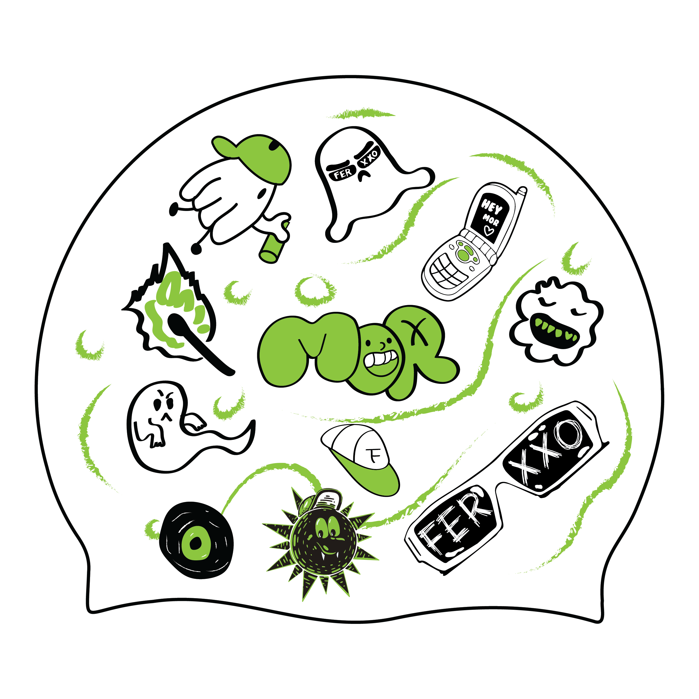
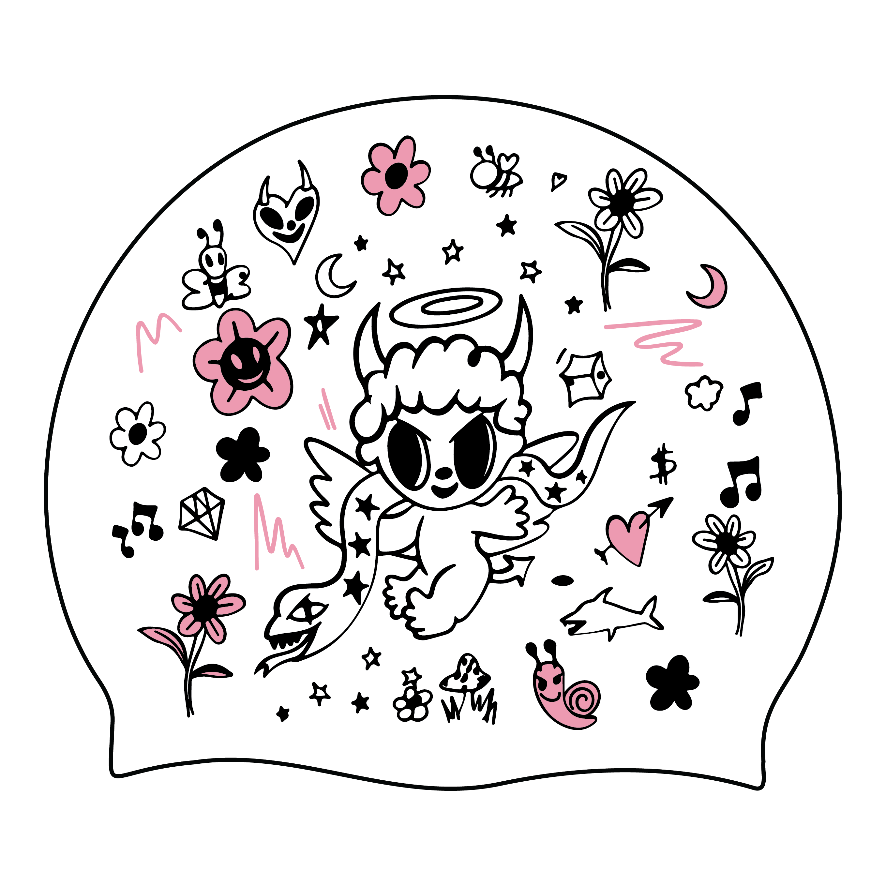

100% silicona

Inspirado en el álbum debut de Bad Bunny "X 100PRE"
Este gorro de natación combina estilo y funcionalidad. El diseño presenta un fondo blanco y el icónico ojo que domina la portada del álbum "X 100PRE" de Bad Bunny.
COMPRAR

Inspirado en el álbum de Bad Bunny "Un Verano Sin Ti"
Este gorro de natación celebra la icónica portada del álbum "Un Verano Sin Ti" de Bad Bunny, centrándose en el elemento más distintivo: los corazones.
COMPRAR

Inspirado en "El FERXXO"
Este gorro de natación captura la esencia y el estilo único de Feid, el artista colombiano conocido como "El FERXXO". Aunque no está basado en un álbum específico, el diseño incorpora varios elementos emblemáticos que representan su imagen y música.
COMPRAR

Inspirado en el álbum de Karol G "Mañana Será Bonito bichota season"
Este gorro de natación captura la esencia optimista y colorida del álbum "Mañana Será Bonito" de Karol G, adaptando su icónica portada al formato de un gorro de natación.
COMPRAR